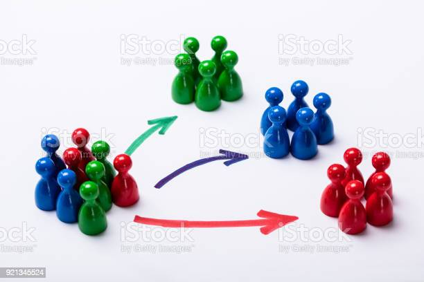

This project is built to help the Marketing Team in identifying the target marketing group(s) from a large population based on some certain features of the customers such as age, annual income and shopping score. KMeans clustering is the technique that is employed to solve this problem in a Python environment.

The purpose of this project is to build several classification models in Python and to determine the best out of them. The best classifier is employed to predict whether a passenger survived in the Titanic based on some features like sex, age, embarked, fare, number of siblings or with spouse and lastly, the number of parent/child(ren) on board.
The purpose of this project is to explore the Sales database with over 150,000 records of transactions. The analysis is done based on the products, markets and customers over month(s) and year that generate the highest and least revenue. Furthermore, the database is explore to gain more insights to help the stakeholders in their decision making.
This project is built to analyze the chances of a customer churning from a service. It then helps the stakeholders with insights to make the best decisions to combat such occurence. This is achieved through univariate, bivariate and multi-variate analysis using pivot tables and visualization charts in python.
The purpose of this project is to build a sales dashboard that can help stakeholders to visualize and identify trends in revenue with respect to products, markets, customers over monthly or yearly period. This is implemented using a Fact table and four lookup or dimension tables in Power BI.
The purpose of this project is to prepare our dataset and make it ready for analysis. We perform some tasks which include; removing invalid, unsuccessful and duplicate transaction records. We also normalized the sales amount by transforming transactions done in US Dollar into Nigerian Naira equivalent.